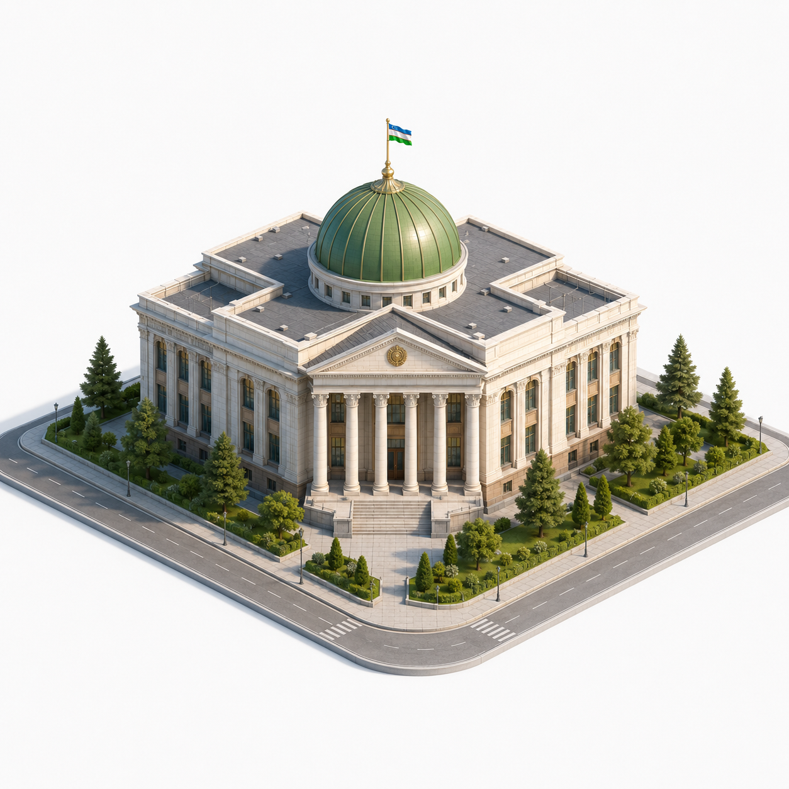
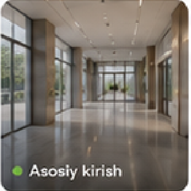
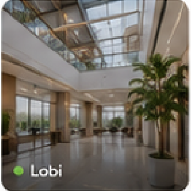
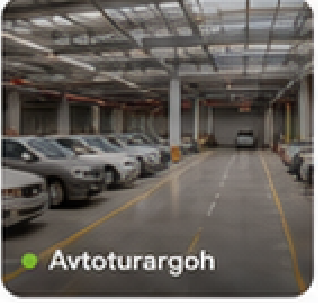
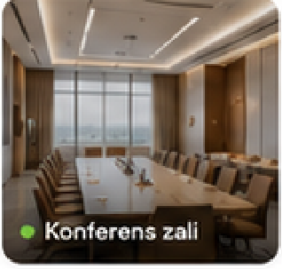

<!DOCTYPE html>
<html lang="uz">
<head>
<meta charset="UTF-8">
<meta name="viewport" content="width=device-width, initial-scale=1.0">
<title>AUGA — Monitoring markazi</title>
<link rel="preconnect" href="https://fonts.googleapis.com">
<link rel="preconnect" href="https://fonts.gstatic.com" crossorigin>
<link href="https://fonts.googleapis.com/css2?family=Onest:wght@300..800&display=swap" rel="stylesheet">
<link rel="stylesheet" href="auga.css">
<style>
/* ---- Monitoring markazi (ekran 6) ---- */
.mon-kpi .kpi-tile{border-radius:16px}
.mon-kpi .kpi-tile.yashilbg{background:#E4F5E0;color:#2E9E44}
.mon-kpi .kpi-tile.sariqbg{background:#FFF0D8;color:#E8930C}
.mon-kpi .kpi-tile.kokbg{background:#E3EEFE;color:#3B82F6}
.mon-kpi .kpi-qiymat b small{font-size:16px;color:var(--matn-3);font-weight:600}
.mon-kpi .delta.qizil{color:#D8432F}

.mon-orta{display:grid;grid-template-columns:250px minmax(0,1fr) 380px;gap:18px;align-items:stretch}
.toifa-karta h3{font-size:16.5px;font-weight:750;margin-bottom:10px}
.toifa-qator{display:flex;align-items:center;gap:11px;width:100%;padding:10px 4px;font-size:14.5px;border-radius:9px;transition:background var(--tez);text-align:left}
.toifa-qator:hover{background:#F6F7F8}
.toifa-qator .nuqta{width:9px;height:9px;border-radius:99px;flex:none}
.toifa-qator .nomi{color:#33383E;font-weight:550}
.toifa-qator b{margin-left:auto;font-weight:750;font-variant-numeric:tabular-nums}
.toifa-jami{display:flex;margin-top:10px;padding-top:14px;border-top:1px solid var(--chiziq);font-size:15px}
.toifa-jami span{font-weight:750}
.toifa-jami b{margin-left:auto;font-weight:800}

.mon-sahna{position:relative;border-radius:18px;overflow:hidden;background:linear-gradient(180deg,#FDFDFC,#F3F4F1);min-height:520px}
.mon-sahna > img{position:absolute;inset:0;width:100%;height:100%;object-fit:contain;padding:36px 60px 40px}
.holat-callout{
  position:absolute;z-index:3;display:flex;align-items:center;gap:10px;
  background:var(--karta);border-radius:13px;box-shadow:var(--soya-pin);
  padding:10px 15px;transition:transform var(--tez);
}
.holat-callout:hover{transform:translateY(-2px)}
.holat-callout .dot{width:28px;height:28px;border-radius:99px;display:grid;place-items:center;flex:none;box-shadow:var(--chuqur-tile-tor)}
.holat-callout .dot.yashil{background:#E4F5E0;color:#2E9E44}
.holat-callout .dot.sariq{background:#FFF0D8;color:#E8930C}
.holat-callout .dot .ic{width:14px;height:14px;stroke-width:2.2}
.holat-callout .nomi{font-size:13.5px;font-weight:700;color:#1F2328;line-height:1.25}
.holat-callout .sub{display:block;font-size:12px;font-weight:500;color:var(--matn-3)}

.kamera-karta .karta-bosh h2{font-size:16.5px}
.kamera-grid{display:grid;grid-template-columns:minmax(0,1fr) minmax(0,1fr);gap:12px}
.kamera{position:relative;border-radius:13px;overflow:hidden;text-align:left}
.kamera img{width:100%;height:118px;object-fit:cover;transition:transform var(--tez)}
.kamera:hover img{transform:scale(1.04)}
.kamera .yorliq{
  position:absolute;left:9px;bottom:9px;display:flex;align-items:center;gap:6px;
  background:rgba(17,20,16,.62);backdrop-filter:blur(3px);color:#fff;
  font-size:11.5px;font-weight:600;padding:4px 9px;border-radius:99px;
}
.kamera .yorliq .nuqta{width:6px;height:6px;border-radius:99px;background:#7DE24A}

.mon-past{display:grid;grid-template-columns:minmax(0,1fr) minmax(0,1.35fr);gap:18px}
.quvvat-karta h3, .ogoh-karta h3{font-size:16.5px;font-weight:750;margin-bottom:14px}
.ogoh-karta .jadval th{padding:10px 14px}
.ogoh-karta .jadval td{padding:12px 14px}
.holat-belgi{display:inline-flex;align-items:center;gap:7px;font-size:13.5px;font-weight:650}
.holat-belgi .nuqta{width:7px;height:7px;border-radius:99px}
.holat-belgi.diqqat{color:#E8752C}
.holat-belgi.ogoh{color:#DD9A0A}
.ogoh-havola{display:flex;justify-content:flex-end;margin-top:6px}
@media (max-width:1500px){
  .mon-orta{grid-template-columns:220px minmax(0,1fr)}
  .kamera-karta{grid-column:1/-1}
  .kamera-grid{grid-template-columns:repeat(4,minmax(0,1fr))}
}
@media (max-width:1240px){
  .mon-orta{grid-template-columns:minmax(0,1fr)}
  .mon-past{grid-template-columns:minmax(0,1fr)}
  .kamera-grid{grid-template-columns:minmax(0,1fr) minmax(0,1fr)}
}
</style>
</head>
<body data-sahifa="monitoring">

<div class="app">
<aside class="sidebar" data-shell-sidebar></aside>

<div class="asosiy">
  <header class="topbar" data-shell-topbar></header>

  <main class="kontent">

    <div class="sahifa-qator">
      <h1>Monitoring markazi</h1>
      <div class="sahifa-harakat">
        <a class="tugma tugma-oq" href="qurilmalar.html"><svg class="ic"><use href="#i-monitor"/></svg>Qurilma diagnostikasi</a>
      </div>
    </div>

    <!-- KPI -->
    <section class="kpi-band mon-kpi" aria-label="Monitoring ko'rsatkichlari">
      <a class="kpi" href="qurilmalar.html">
        <span class="kpi-tile yashilbg"><svg class="ic"><use href="#i-ekran"/></svg></span>
        <div class="kpi-matn">
          <div class="kpi-yorliq">Onlayn qurilmalar</div>
          <div class="kpi-qiymat"><b>1 248 <small>/ 1 560</small></b></div>
          <div class="kpi-izoh">80% faol</div>
        </div>
      </a>
      <button class="kpi" data-toast="Ogohlantirishlar jurnali">
        <span class="kpi-tile sariqbg"><svg class="ic"><use href="#i-qongiroq"/></svg></span>
        <div class="kpi-matn">
          <div class="kpi-yorliq">Ogohlantirishlar</div>
          <div class="kpi-qiymat"><b>12</b><span class="delta qizil">↑ 3</span></div>
          <div class="kpi-izoh">So'nggi 24 soat</div>
        </div>
      </button>
      <button class="kpi" data-toast="Quvvat monitoringi">
        <span class="kpi-tile kokbg"><svg class="ic"><use href="#i-energiya"/></svg></span>
        <div class="kpi-matn">
          <div class="kpi-yorliq">Quvvat iste'moli</div>
          <div class="kpi-qiymat"><b>1.42 <small style="color:#17191C;font-size:19px;font-weight:700">MW</small></b></div>
          <div class="kpi-izoh">Joriy yuklama</div>
        </div>
      </button>
      <button class="kpi" data-toast="Aloqa kanallari holati">
        <span class="kpi-tile yashilbg"><svg class="ic"><use href="#i-wifi"/></svg></span>
        <div class="kpi-matn">
          <div class="kpi-yorliq">Aloqa holati</div>
          <div class="kpi-qiymat"><b>98%</b></div>
          <div class="kpi-izoh">Barqaror</div>
        </div>
      </button>
    </section>

    <!-- O'rta qator: toifalar + sahna + kameralar -->
    <section class="mon-orta">
      <div class="karta toifa-karta">
        <h3>Qurilma toifalari</h3>
        <button class="toifa-qator" data-toast="HVAC qurilmalari"><span class="nuqta" style="background:#22B14C"></span><span class="nomi">HVAC</span><b>320</b></button>
        <button class="toifa-qator" data-toast="Elektr qurilmalari"><span class="nuqta" style="background:#3B82F6"></span><span class="nomi">Elektr</span><b>280</b></button>
        <button class="toifa-qator" data-toast="Yoritish qurilmalari"><span class="nuqta" style="background:#F2C230"></span><span class="nomi">Yoritish</span><b>186</b></button>
        <button class="toifa-qator" data-toast="Xavfsizlik qurilmalari"><span class="nuqta" style="background:#9B59F5"></span><span class="nomi">Xavfsizlik</span><b>342</b></button>
        <button class="toifa-qator" data-toast="Boshqa qurilmalar"><span class="nuqta" style="background:#C7C7CD"></span><span class="nomi">Boshqa</span><b>432</b></button>
        <div class="toifa-jami"><span>Jami</span><b>1 560</b></div>
      </div>

      <div class="mon-sahna">
        
        <button class="holat-callout" style="left:26%;top:6%" data-toast="HVAC tizimi: HVAC blok #3 (Tom qavati) ogohlantirish holatida">
          <span class="dot sariq"><svg class="ic"><use href="#i-ogoh"/></svg></span>
          <span><span class="nomi">HVAC tizimi</span><span class="sub">Ogohlantirish</span></span>
        </button>
        <button class="holat-callout" style="right:4%;top:8%" data-toast="Elektr ta'minoti: Elektr panel #7 (Texnik qavat) ogohlantirish holatida">
          <span class="dot sariq"><svg class="ic"><use href="#i-ogoh"/></svg></span>
          <span><span class="nomi">Elektr ta'minoti</span><span class="sub">Ogohlantirish</span></span>
        </button>
        <button class="holat-callout" style="left:2%;top:34%" data-toast="Yong'in xavfsizligi: sensor #32 tekshiruv talab qiladi!">
          <span class="dot sariq"><svg class="ic"><use href="#i-ogoh"/></svg></span>
          <span><span class="nomi">Yong'in xavfsizligi</span><span class="sub">Diqqat</span></span>
        </button>
        <button class="holat-callout" style="right:2%;top:44%" data-toast="Videokuzatuv: 46/46 kamera onlayn">
          <span class="dot yashil"><svg class="ic"><use href="#i-belgi"/></svg></span>
          <span><span class="nomi">Videokuzatuv</span><span class="sub">Normal</span></span>
        </button>
        <button class="holat-callout" style="left:4%;top:68%" data-toast="Kirish nazorati: normal">
          <span class="dot yashil"><svg class="ic"><use href="#i-belgi"/></svg></span>
          <span><span class="nomi">Kirish nazorati</span><span class="sub">Normal</span></span>
        </button>
        <button class="holat-callout" style="right:6%;top:74%" data-toast="Yoritish tizimi: normal">
          <span class="dot yashil"><svg class="ic"><use href="#i-belgi"/></svg></span>
          <span><span class="nomi">Yoritish tizimi</span><span class="sub">Normal</span></span>
        </button>
      </div>

      <div class="karta kamera-karta">
        <div class="karta-bosh">
          <h2>Kameralar</h2>
          <a class="karta-havola" href="qurilmalar.html">Barchasini ko'rish</a>
        </div>
        <div class="kamera-grid">
          <button class="kamera" data-toast="Asosiy kirish kamerasi — jonli efir"><span class="yorliq"><span class="nuqta"></span>Asosiy kirish</span></button>
          <button class="kamera" data-toast="Lobi kamerasi — jonli efir"><span class="yorliq"><span class="nuqta"></span>Lobi</span></button>
          <button class="kamera" data-toast="Avtoturargoh kamerasi — jonli efir"><span class="yorliq"><span class="nuqta"></span>Avtoturargoh</span></button>
          <button class="kamera" data-toast="Konferens zali kamerasi — jonli efir"><span class="yorliq"><span class="nuqta"></span>Konferens zali</span></button>
        </div>
      </div>
    </section>

    <!-- Pastki qator -->
    <section class="mon-past">
      <div class="karta quvvat-karta">
        <h3>Quvvat iste'moli dinamikasi</h3>
        <svg id="quvvat-grafik" width="100%" height="230" role="img"
             aria-label="Quvvat iste'moli 24 soat davomida, 0 dan 2 megavattgacha. Joriy: 1,42 megavatt soat 14:00 da."></svg>
      </div>

      <div class="karta ogoh-karta jadval-korpus" style="padding:22px">
        <h3>Faol ogohlantirishlar</h3>
        <div class="jadval-orash">
          <table class="jadval">
            <thead><tr><th>Vaqt</th><th>Qurilma</th><th>Turi</th><th>Holat</th><th>Joylashuv</th></tr></thead>
            <tbody>
              <tr data-toast="Yong'in sensori #32 kartasi">
                <td>24-may 14:21</td><td><b>Yong'in sensori #32</b></td><td>Yong'in xavfsizligi</td>
                <td><span class="holat-belgi diqqat"><span class="nuqta" style="background:#E8752C"></span>Diqqat</span></td>
                <td>2-qavat, Blok B</td>
              </tr>
              <tr data-toast="Elektr panel #7 kartasi">
                <td>24-may 14:18</td><td><b>Elektr panel #7</b></td><td>Quvvat</td>
                <td><span class="holat-belgi ogoh"><span class="nuqta" style="background:#DD9A0A"></span>Ogohlantirish</span></td>
                <td>Texnik qavat</td>
              </tr>
              <tr data-toast="HVAC blok #3 kartasi">
                <td>24-may 14:10</td><td><b>HVAC blok #3</b></td><td>HVAC</td>
                <td><span class="holat-belgi ogoh"><span class="nuqta" style="background:#DD9A0A"></span>Ogohlantirish</span></td>
                <td>Tom qavati</td>
              </tr>
            </tbody>
          </table>
        </div>
        <div class="ogoh-havola">
          <a class="karta-havola" href="bildirishnomalar.html">Barchasini ko'rish<svg class="ic"><use href="#i-strelka"/></svg></a>
        </div>
      </div>
    </section>

  </main>
</div>
</div>

<script src="auga.js"></script>
<script>
document.addEventListener("DOMContentLoaded", ()=>{
/* Quvvat grafigi — 24 soatlik chiziq */
const svg = document.getElementById("quvvat-grafik");
const NS = "http://www.w3.org/2000/svg";
function el(t,a){const n=document.createElementNS(NS,t);for(const k in a)n.setAttribute(k,a[k]);svg.appendChild(n);return n;}

const NUQTALAR = [0.85,0.82,0.78,0.74,0.72,0.75,0.82,0.95,1.05,1.10,1.08,1.15,1.22,1.35,1.42,1.30,1.18,1.24,1.28,1.16,1.10,1.06,1.12,1.08];
function chiz(){
  svg.innerHTML = "";
  const W = svg.clientWidth || 560, H = 230;
  const chap = 34, ong = 10, tepa = 16, past = 30;
  const pw = W - chap - ong, ph = H - tepa - past;
  const maxY = 2.0;
  const x = i => chap + i/(NUQTALAR.length-1)*pw;
  const y = v => tepa + ph - v/maxY*ph;

  [0,0.5,1.0,1.5,2.0].forEach(t=>{
    el("line",{x1:chap,y1:y(t),x2:W-ong,y2:y(t),stroke:"#EDEEE9","stroke-width":1});
    const tx = el("text",{x:chap-8,y:y(t)+3.5,"text-anchor":"end","font-size":10.5,fill:"#71767E","font-family":"'Onest',sans-serif"});
    tx.textContent = t.toFixed(1).replace(".0","").replace("0.5","0.5");
  });
  const mw = el("text",{x:chap-8,y:tepa-4,"text-anchor":"end","font-size":10.5,fill:"#71767E","font-family":"'Onest',sans-serif"});
  mw.textContent = "MW";

  [0,4,8,12,16,20,24].forEach(s=>{
    const t = el("text",{x:x(s===24?23:s)+(s===24?12:0),y:H-8,"text-anchor":"middle","font-size":10.5,fill:"#71767E","font-family":"'Onest',sans-serif"});
    t.textContent = String(s).padStart(2,"0")+":00";
  });

  const chiziq = NUQTALAR.map((v,i)=>`${x(i)},${y(v)}`).join(" ");
  el("polygon",{points:`${chap},${y(0)} ${chiziq} ${x(NUQTALAR.length-1)},${y(0)}`,fill:"url(#grad-area-3d)"});
  el("polyline",{points:chiziq,fill:"none",stroke:"#78C802","stroke-width":2,"stroke-linejoin":"round","stroke-linecap":"round",filter:"url(#depth-sm)"});
  NUQTALAR.forEach((v,i)=>{
    if (i%2===0) el("circle",{cx:x(i),cy:y(v),r:3.4,fill:"#78C802",stroke:"#fff","stroke-width":2});
  });

  /* 14:00 belgisi */
  const i14 = 14;
  el("line",{x1:x(i14),y1:tepa,x2:x(i14),y2:y(0),stroke:"#C9CDC4","stroke-width":1,"stroke-dasharray":"3 3"});
  el("circle",{cx:x(i14),cy:y(NUQTALAR[i14]),r:5,fill:"#78C802",stroke:"#fff","stroke-width":2.5});
  const bx = Math.min(x(i14)-46, W-104);
  const g = el("g",{});
  const flag = document.createElementNS(NS,"rect");
  flag.setAttribute("x",bx); flag.setAttribute("y",y(NUQTALAR[i14])-46);
  flag.setAttribute("width",92); flag.setAttribute("height",34); flag.setAttribute("rx",9);
  flag.setAttribute("fill","#fff"); flag.setAttribute("filter","drop-shadow(0 2px 6px rgba(23,26,31,.14))");
  g.appendChild(flag);
  const t1 = document.createElementNS(NS,"text");
  t1.setAttribute("x",bx+46); t1.setAttribute("y",y(NUQTALAR[i14])-31);
  t1.setAttribute("text-anchor","middle"); t1.setAttribute("font-size","12"); t1.setAttribute("font-weight","750");
  t1.setAttribute("fill","#17191C"); t1.setAttribute("font-family","'Onest',sans-serif");
  t1.textContent = "1.42 MW";
  g.appendChild(t1);
  const t2 = document.createElementNS(NS,"text");
  t2.setAttribute("x",bx+46); t2.setAttribute("y",y(NUQTALAR[i14])-18);
  t2.setAttribute("text-anchor","middle"); t2.setAttribute("font-size","10"); t2.setAttribute("fill","#71767E");
  t2.setAttribute("font-family","'Onest',sans-serif");
  t2.textContent = "14:00";
  g.appendChild(t2);
  svg.appendChild(g);
}
chiz();
let rz; window.addEventListener("resize", ()=>{clearTimeout(rz); rz=setTimeout(chiz,120);});

});
</script>
</body>
</html>
